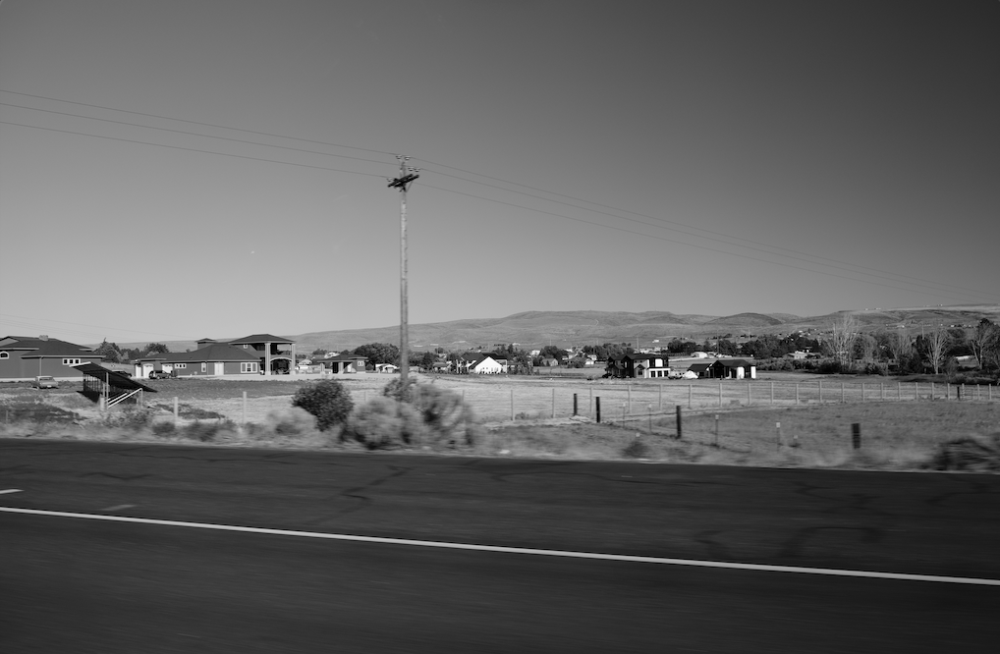

In this section, I dive deeper into my interest in digital photography. I began exploring this area of my hobbies more recently although I have always had an affinity for arts. Over time, I have learned how to use most digital cameras. My goal is to produce pictures that I am proud to share with friends and family.
- My camera model is the Fujifulm XT-30 Mark 2
- I typically use a 18 to 55 mm lens with a ND filter
- My favorite photos to take are with a black and white filter